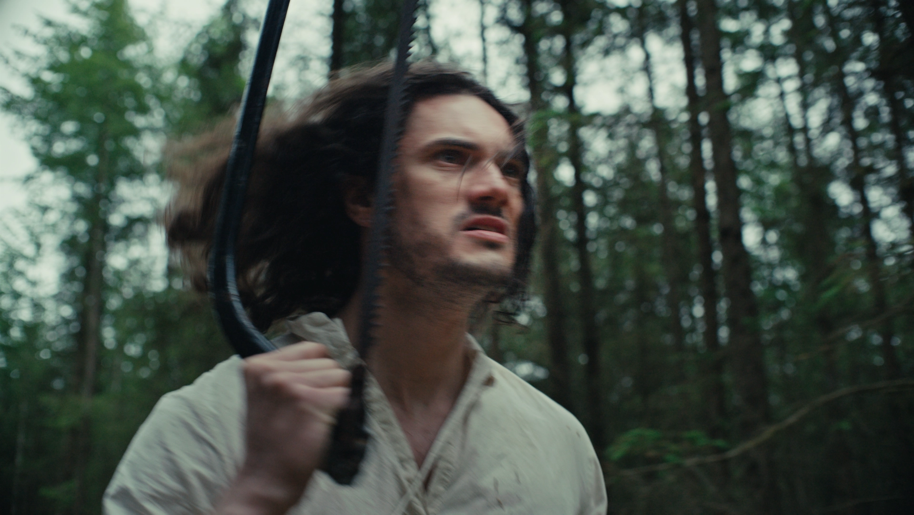

A pharmaceutical researcher travels to the remote boglands of rural Denmark to retrieve a rare plant specimen – and stumbles into the strange domain of an eccentric and cunning woman.
Synopsis
Ambitious pharmaceutical scientist Toby (Rowland Stirling) searches for a new plant variety in the remote wetlands of Scandinavia – a discovery he hopes will make his name.
Instead, the moody Danish countryside swallows Toby; he loses his way in a vast forest and falls – literally – into Gro, an eccentric local forager, warm and wry and unnervingly sharp. “It’s difficult to die in the Danish countryside,” Gro teases the injured Toby, “but maybe you should stick to the trails.” Gro takes Toby back to her off-grid shack, and they hit it off over beers and aquavit – Toby soon learns that Gro is more than just an odd old hippy, and that the bogs contain things far stranger than the plant he is looking for.
Gro’s Garden is a folk horror feature shot on location in Copenhagen and the ancient boglands of Western Jutland, Denmark. A contemporary story about a man whose scientific confidence is dismantled by a woman who has seen his kind before – and who has been waiting for exactly him.

Cast
- TobyRowland Stirling
- GroFif Beck
- KlausJesper Paasche
Details
- GenreFolk Horror / Psychological Horror
- FormatFeature Film · 4K · 2:1
- Runtime88 minutes
- LanguageEnglish, with Danish elements
- SettingCopenhagen & the Lemvig region, Western Jutland
- StatusIn post-production
- DirectorNate Budzinski
- CinematographyMichael Mark Lanham F.N.F.
- EditorKirsti Theresa Lowdermilk N.F.K.
- Art DirectorAlexandra Stroemich
- 1st ADOona O’Hagan
- ProductionWolf One
Enquiries
hello@wolfone.studio